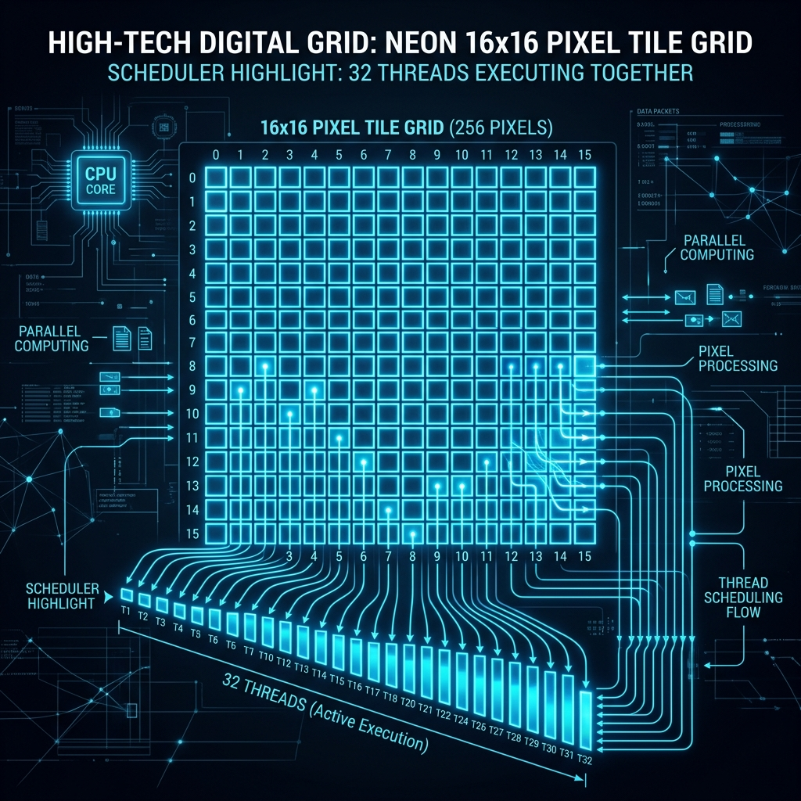
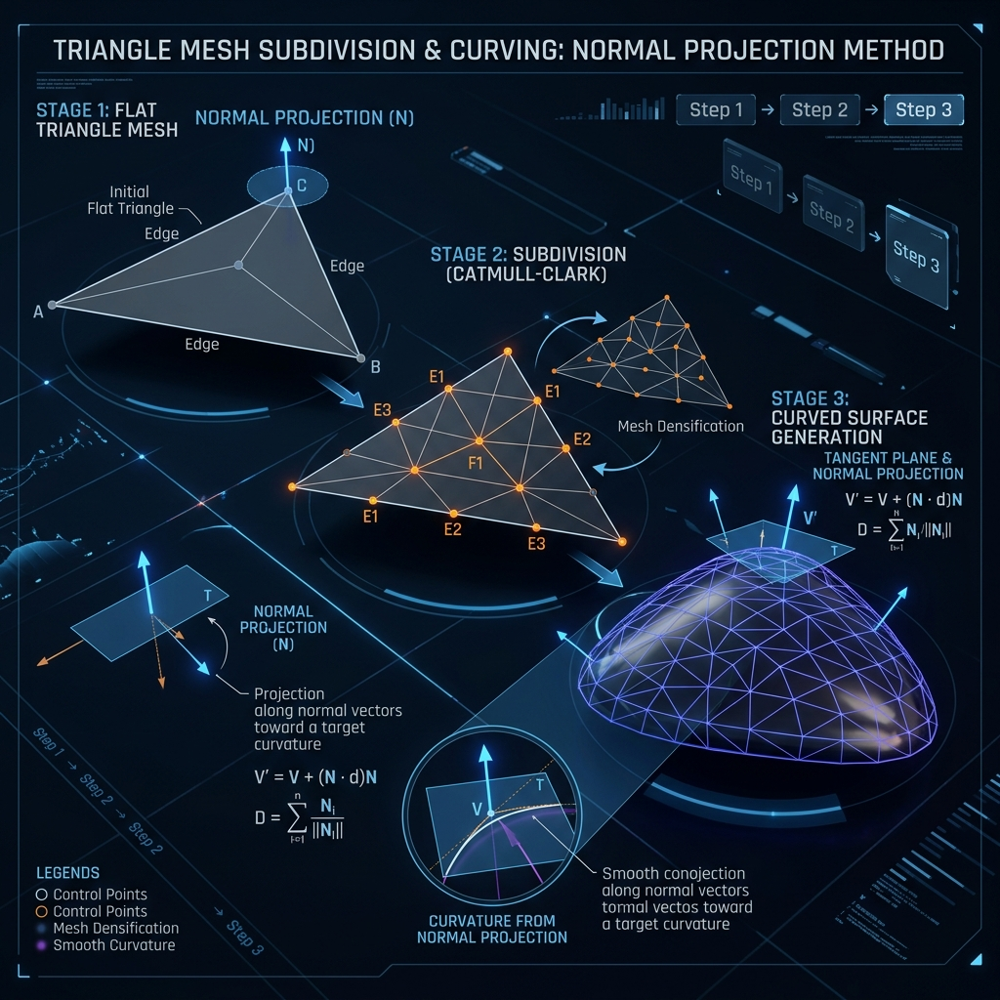
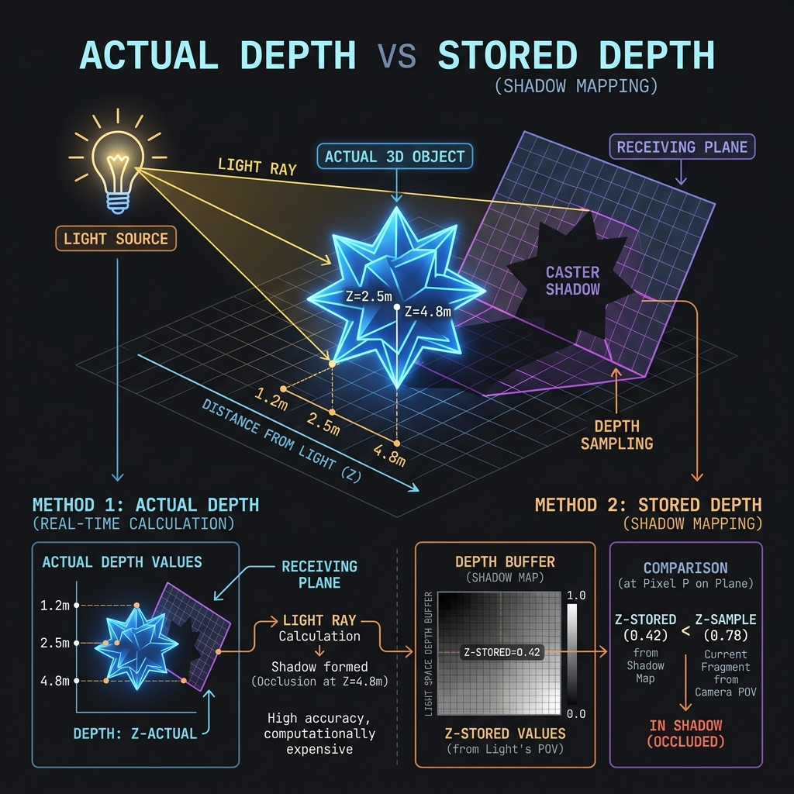

13. 1-on-1 Presentation Prep Guide
This guide is designed for your 1-hour 1-on-1 review. It breaks down the four core concepts (Binding, Dispatch, Phong Tessellation, and Shadowmapping) using custom diagrams, detailed code explanations, and direct file/line traces to your project.
1. Resource Binding & D3D11 Pipeline Hazards
Visual Introduction
To use any resource (a buffer or a texture) on the GPU, the CPU must assign a View to it and bind it to a specific Register Slot (e.g., t0, u0, cb0).
- SRV (Shader Resource View): Read-only access for shaders (e.g., textures, shadow maps).
- UAV (Unordered Access View): Read-and-Write random access (e.g., compute shader output texture, particle buffer).
- RTV (Render Target View): Sequential write-only access for drawing pixels.
nullptr (black texture).
How it is Implemented in your Project
To avoid this hazard in your deferred renderer, you must explicitly unbind the G-Buffer textures from the Output Merger (OM) stage before binding them to the Compute Shader (CS) stage:// 1. Unbind RTVs by passing an array of null pointers to the Output Merger
ID3D11RenderTargetView* nullRTVs[3] = { nullptr, nullptr, nullptr };
context->OMSetRenderTargets(3, nullRTVs, nullptr);
// 2. Now it is safe to bind them as inputs (SRVs) to the Compute Shader
ID3D11ShaderResourceView* srvs[3] = { gbuffer.GetAlbedoSRV(), gbuffer.GetNormalSRV(), gbuffer.GetPositionSRV() };
context->CSSetShaderResources(0, 3, srvs);After the Compute Shader finishes, you perform the reverse operation to clean up slots, preventing hazards on the next frame:
// Unbind SRVs and UAVs from the Compute Shader
ID3D11ShaderResourceView* nullSRVs[5] = { nullptr };
context->CSSetShaderResources(0, 5, nullSRVs);
ID3D11UnorderedAccessView* nullUAV = nullptr;
context->CSSetUnorderedAccessViews(0, 1, &nullUAV, nullptr);Where it Happens in the Project
- Shadow Pass Bindings: Main.cpp:L571-580
- Shaders, viewport, and depth views are bound; pixel shader is set to null.
- Geometry Pass Bindings: Main.cpp:L638-658
- G-Buffer RTVs and tessellation stages are bound.
- Compute Shader Unbinding & Binding: Main.cpp:L846-863
- G-Buffer RTVs are unbound, and G-Buffer SRVs, shadow map arrays, and UAVs are bound.
- Compute Shader Cleanup: Main.cpp:L866-870
- Bindings are cleared.
- Vertex Pulling (Buffer-less) Setup: ParticleSystemD3D11.cpp:L152-168
- Vertex buffer set to null; particle structured buffer bound as an SRV to the vertex shader.
2. Compute Shader Dispatch & Warp Scheduling
Visual Introduction

Compute Shaders execute in a grid of Thread Groups, which contain individual Threads.
- Warps & Wavefronts: The GPU hardware groups threads in sets of 32 (Nvidia) or 64 (AMD) and executes them in lockstep.
- Occupancy: Having group sizes that are multiples of 32 (e.g., 256 or 32 threads) ensures no execution lanes are left idle.
- Memory Locality: Processing pixels in a $16 \times 16$ tile layout ensures adjacent threads read adjacent texels, which maximizes texture L1 cache hits.
How it is Implemented in your Project
To launch a compute shader to process every pixel on a $1024 \times 576$ screen, you define the group size in HLSL and compute the grid size in C++:#### 1. In HLSL: Group Definition
// LightingCS.hlsl
[numthreads(16, 16, 1)] // A 16x16 grid of threads (256 threads total)#### 2. In C++: Grid Calculation (Ceiling Division) To cover the screen, we divide screen dimensions by the group dimension. We use ceiling division (Size + GroupDim - 1) / GroupDim to prevent cutting off the edges of the screen:
// Main.cpp
context->Dispatch((WIDTH + 15) / 16, (HEIGHT + 15) / 16, 1);
// (1024 + 15)/16 = 64 groups on X
// (576 + 15)/16 = 36 groups on Y#### 3. Out-of-Bounds Guard in HLSL Since ceiling division rounds up, some threads at the right and bottom edges will process coordinates off-screen. We guard against memory errors:
// LightingCS.hlsl
uint2 pixel = DTid.xy;
if (pixel.x >= width || pixel.y >= height)
return; // Stop thread execution before performing operationsWhere it Happens in the Project
- Lighting Compute Dispatch: Main.cpp:L864
- Triggers the deferred shading lighting pass.
- Particle Update Dispatch: ParticleSystemD3D11.cpp:L115-117
- Dispatches particle simulation updates using 32 threads per group.
- Lighting CS Thread Layout & Bounds Check: LightingCS.hlsl:L93-102
- Particle Update CS Thread Layout & Bounds Check: ParticleUpdateCS.hlsl:L60-66
3. Phong Tessellation & LOD System
Visual Introduction

Tessellation takes a blocky model and subdivides its triangles dynamically on the GPU.
- Hull Shader (HS): Computes tessellation factors (subdivision level) based on distance to the camera.
- Domain Shader (DS): Curves the subdivided vertices using the original vertex positions and normal vectors.
How it is Implemented in your Project
1. LOD Midpoint Calculation (Hull Shader):// TessellationHS.hlsl
float3 edge0Midpoint = (patch[0].worldPosition + patch[1].worldPosition) * 0.5f;
output.edges[0] = CalculateTessellationFactor(edge0Midpoint);2. Projecting onto Tangent Planes (Domain Shader): For every new vertex coordinate created by the tessellator, we project its flat position onto the tangent plane defined by the three original corner control points:
// TessellationDS.hlsl
float3 ProjectToPlane(float3 position, float3 planePoint, float3 planeNormal)
{
float3 toPosition = position - planePoint;
float distanceToPlane = dot(toPosition, planeNormal); // Perpendicular distance
return position - distanceToPlane * planeNormal; // Project orthogonally
}We interpolate these three projections using barycentric coordinates $(u, v, w)$ and blend it with the flat triangle position using a blend factor (PHONG_ALPHA = 0.75):
float3 phongPosition = projection0 * u + projection1 * v + projection2 * w;
output.worldPosition = lerp(linearPosition, phongPosition, PHONG_ALPHA);Where it Happens in the Project
- Tessellation Input Topology Setup: Main.cpp:L652
- Sets the topology to
D3D11_PRIMITIVE_TOPOLOGY_3_CONTROL_POINT_PATCHLIST. - Hull Shader Config & LOD Math: TessellationHS.hlsl:L39-87
- Computes edge/inside factors and sets up
fractional_oddpartitioning. - Domain Shader Smoothing Math: TessellationDS.hlsl:L36-82
- Implements point-plane projections and blends them to curve the geometry.
4. Shadow Mapping & Precision Tuning
Visual Introduction

Shadow mapping works in two passes: 1. Pass 1 (Shadow Pass): We render the scene depth from the perspective of each light source and store it in a Texture Array (shadowMap). 2. Pass 2 (Lighting Pass): We compare the pixel's distance to the light against the distance stored in the shadow map.
#### ⚡ High-Performance Depth-Only rendering During the shadow pass, we bind a nullptr Render Target and disable the Pixel Shader. Since we do not calculate colors, the GPU rasterizer writes depth values directly into VRAM using hardware-accelerated Early-Z, doubling performance.
How it is Implemented in your Project
1. Typeless Format Setup (C++): To write depth and read it as a texture, the resource format must be typeless:// DepthBufferD3D11.cpp
texFormat = DXGI_FORMAT_R24G8_TYPELESS;
dsvFormat = DXGI_FORMAT_D24_UNORM_S8_UINT; // Format used for writing depth
srvFormat = DXGI_FORMAT_R24_UNORM_X8_TYPELESS; // Format used for reading in shader2. The Shadow Test comparison (HLSL): We reconstruct the pixel's light-space coordinate and compare its actual depth (depth) against the value stored in the shadow map using a comparison sampler:
// LightingCS.hlsl
float shadow = shadowMaps.SampleCmpLevelZero(shadowSampler, float3(shadowUV, lightIndex), depth);- Comparison Operator: We use
D3D11_COMPARISON_LESS_EQUAL(depth ranges from 0 = near to 1 = far). Ifdepth <= shadowMapValue, the pixel is lit (returns 1.0), otherwise it is occluded (returns 0.0). - Smooth Edges (PCF): The comparison sampler performs the comparison on the 4 nearest texels first, then interpolates the resulting
0or1values, rendering soft shadow edges. - Preventing Acne with Shader Bias: To prevent self-shadowing acne, we apply a slope-dependent bias in the shader:
float cosTheta = saturate(dot(normal, lightDir));
float bias = 0.0005f * (sqrt(1.0f - cosTheta * cosTheta) / (cosTheta + 0.0001f));
bias = clamp(bias, 0.0f, 0.001f);
depth -= bias;Where it Happens in the Project
- Shadow Map Array Setup: Main.cpp:L297-298
- Allocates the 4-slice shadow map buffer.
- Hardware Bias Config: Main.cpp:L77-83
- Sets up constant and slope-scaled depth bias inside
D3D11_RASTERIZER_DESC. - Comparison Sampler Setup: Main.cpp:L85-100
- Sets up comparison filtering and white border clamp.
- Shadow Pass Execution: Main.cpp:L571-618
- Configures the pipeline for depth-only rendering and updates light view-projections.
- Typeless Texture & View Allocations: DepthBufferD3D11.cpp:L76-153
- Shader Bias & Comparison Sampling: LightingCS.hlsl:L60-91
- Implements PCF sampling and receiver-plane-oriented depth bias.